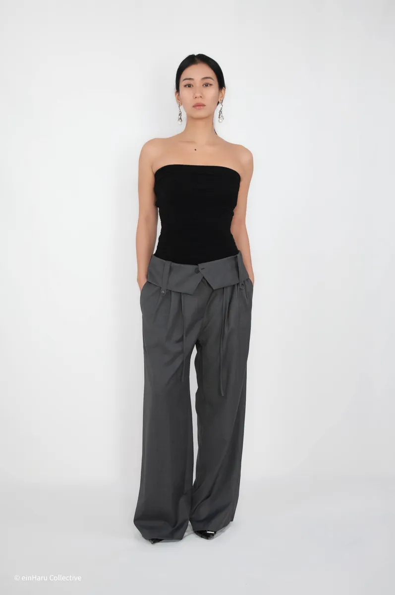
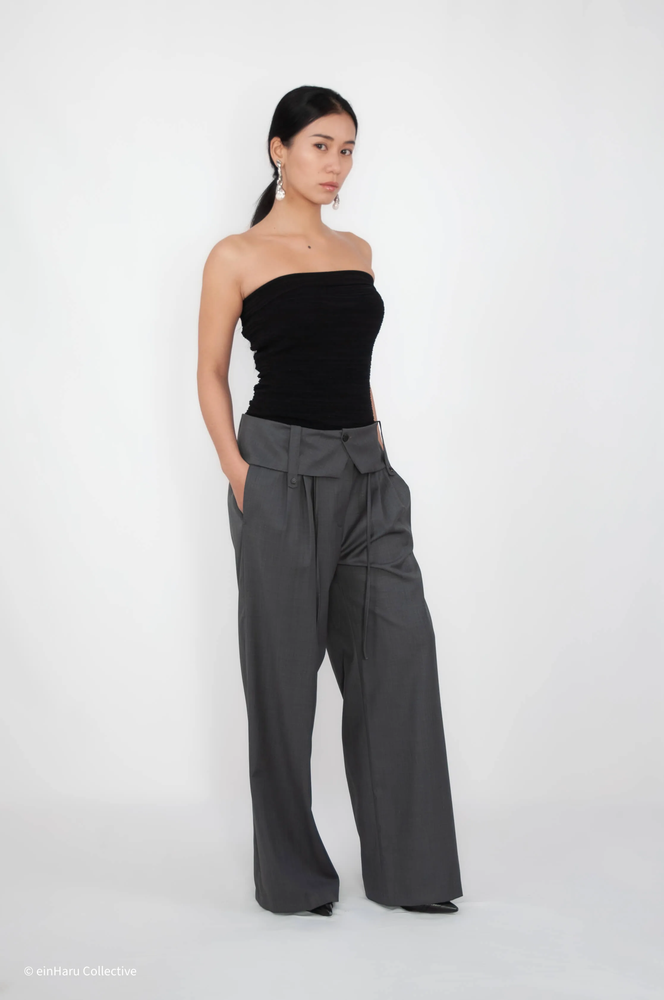
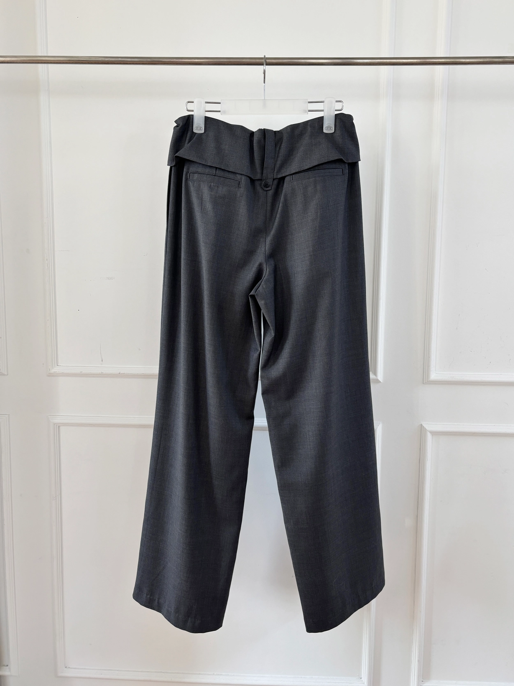
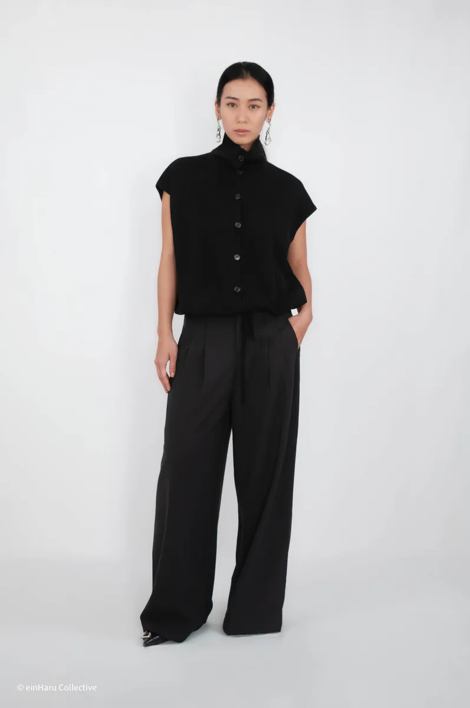
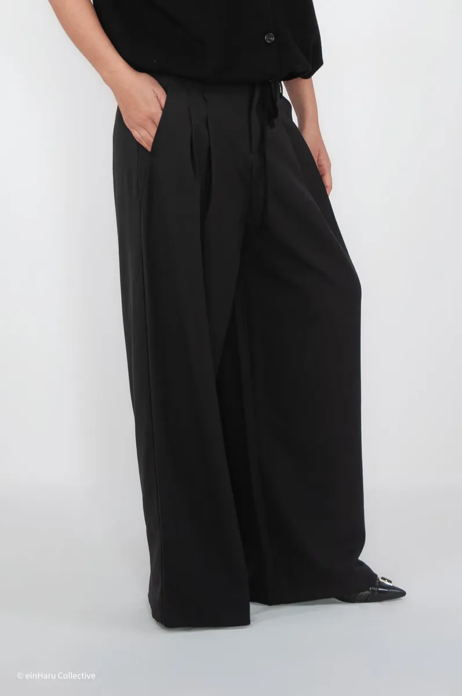

Wide-Leg-Hosen richtig stylen: Guide 2026
Wide-Leg-Hosen gehören zu den praktischsten Silhouetten einer minimalistischen Garderobe — aber erst die richtigen Proportionen entscheiden, ob ein Look durchdacht wirkt oder unfertig. Dieser Guide erklärt die wichtigsten Regeln, damit Wide-Leg-Hosen zuverlässig im Alltag funktionieren.
Wide-Leg-Hosen für den Berliner Alltag gestylt: Volumen, Struktur und Proportionsregeln von einHaru Collective.

Proportion: Volumen mit klarer Oberteil-Linie ausbalancieren

Die wichtigste Regel bei Wide-Leg-Hosen: Ist das Bein weit geschnitten, muss die Oberteil-Linie kontrolliert sein. Ein oversized Hemd, offen über einer Barrel-Hose getragen, erzeugt konkurrierende Volumen. Besser: einstecken, halb einstecken oder ein cropped Oberteil wählen, das an der natürlichen Taille endet, um den Übergang klar zu definieren.
Bei Hosen mit Volumen an Hüfte und Oberschenkel — wie den Beaker Pants — gibt ein enges oder leicht strukturiertes Oberteil der Silhouette eine klare Hierarchie. Die Hose übernimmt die visuelle Arbeit, das Oberteil hält den Blick oben.
Schuhwerk: Der Saum bestimmt den Schuh

Eine Wide-Leg-Hose mit langem Saum funktioniert am besten mit einem Schuh, der optisch erdet. Schuhe mit dicker Sohle, niedrige Blockabsätze und schlichte Loafer passen gut. Zierliche Schuhe können unter dem Volumen verschwinden und den Fuß unbeholfen wirken lassen.
Bei cropped Wide-Leg-Schnitten funktionieren flache Schuhe und Sneaker gut — der Saum sitzt hoch genug, um klar erkennbar zu bleiben. Bei einem bodenlangen Schnitt hält ein Schuh mit leichter Erhöhung oder kräftiger Sohle die Proportion am Knöchel.
Oberteil: Eng, strukturiert oder cropped
Drei Oberteil-Ansätze, die zuverlässig zu Wide-Leg-Hosen passen:
Enges Oberteil, offen getragen — funktioniert, wenn es nah an der Hüfte endet. Der Körper bleibt sichtbar genug, um bewusst zu wirken, nicht formlos.
Strukturiertes Hemd, eingesteckt oder halb eingesteckt — schafft einen Taillen-Bezugspunkt. Ein guter Kragen oder eine definierte Schulterlinie verhindert, dass die obere Hälfte im Volumen darunter untergeht.
Cropped Länge — endet an der natürlichen Taille oder knapp darüber. Die klare visuelle Trennung zwischen oben und unten lässt Wide-Leg-Proportionen bewusst wirken, nicht zufällig.
Die Pin Tuck Wide Leg Trouser von HELDER passt gut zu einem cleanen Hemd mit einem geöffneten Knopf an der Taille — ein dezenter Tuck-Effekt, ohne komplett einzustecken.
Layering über Wide-Leg-Hosen
Bei einer zusätzlichen Außenlage ist die Länge die wichtigste Entscheidung. Ein Mantel oder eine Jacke, die auf Oberschenkelmitte endet, erhält die Form der Hose darunter sichtbar. Ein bodenlanger Mantel über einer Wide-Leg-Hose erzeugt einen durchgehenden Säulen-Effekt — das funktioniert, aber die Hose trägt dann nichts mehr zur Silhouette bei.
Für Berliner Wetterwechsel ist eine cropped oder hüftlange Außenlage über Wide-Leg-Hosen die praktischste Balance. So bleibt die Hosen-Silhouette sichtbar, und das Gesamtvolumen bleibt für Pendeln oder Bewegung im Freien handhabbar.
Eine Lage reicht meist aus. Wide-Leg-Hosen tragen optisch schon genug Gewicht. Mehrere Lagen mit ähnlichem Volumen wirken schnell überladen statt durchdacht.
Shop: Wide-Leg-Hosen von einHaru Collective
Zwei Wide-Leg-Hosen sind aktuell im einHaru-Sortiment erhältlich — beide aus Berlin, Versand EU-weit.
Beaker Pants — Londonflat
Eine barrel-förmige Wide-Leg-Hose aus strukturiertem, klarem Stoff. Das Volumen liegt am Oberschenkel und verjüngt sich leicht zum Saum — eine geerdete statt ausschwingende Silhouette. Passt zu engen Oberteilen und einer einzelnen Außenlage. Aktuell im einHaru-Sortiment erhältlich.
Produkt ansehen

Pin Tuck Wide Leg Trouser — HELDER
Eine raffinierte Wide-Leg-Hose mit Biesen-Detail entlang des vorderen Beins. Die Biese gibt Struktur ohne Steifheit und hält die Silhouette am Knie sauber. Der hohe Bund schafft einen natürlichen Bezugspunkt ohne Gürtel. Fällt true to size — Maßangaben auf der Produktseite.
Produkt ansehenWeiterlesen: Seoul-Berlin Minimalist Style Guide oder zurück zum Editorial.